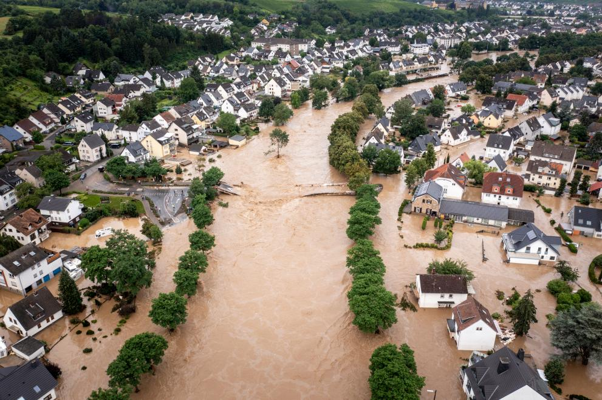

To survive a flood, escape to higher land as soon as you are advised or see rising water levels. Avoid walking or driving through flooded regions, since they may conceal hazards. During the flood disaster, be informed by following official channels for updates and directions.
Consider these steps before, during, and after a Flood: